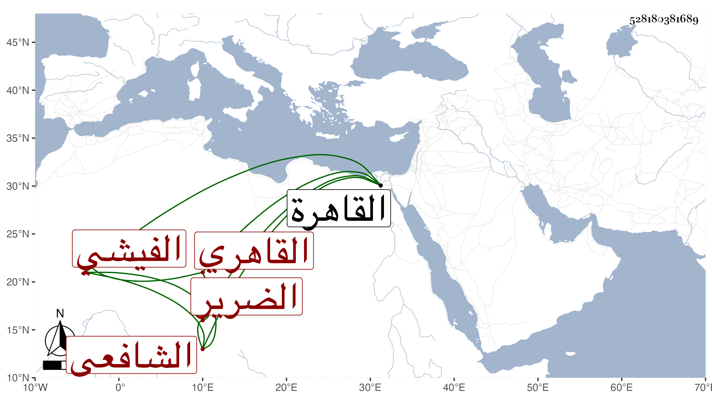

0902Sakhawi.DawLamic.ITO20230111-ara1.EIS1600.528180381689
Biography ID: 528180381689
743
محمد بن عيسى بن عثمان بن محمد الفخر بن الشرف القاهري الشافعي ابن أخت الولوي الفيشي الضرير أحد عدول جامع الصالح وأخو أحمد وعلي الماضيين وأبوهم ويعرف كسلفه بابن جوشن ، ولد سنة ست وثمانمائة بالقاهرة وحفظ القرآن والمنهاج وغيره واشتغل يسيرا على شيخنا ابن خضر وعلى عبادة في العربية بل أخذ عن البيجوري والمجد البرماوي والطبقة قليلا ولازم شيخنا في الأمالي وغيرها وقابل معه في الترغيب نسخة بخطه وفي فتح الباري وغيره بل كان ممن سمع البخاري من لفظه قديما ثم ولاه النقابة بأخرة بواسطة ولده ، وأنشأ دارا بالقرب من قاعة الأحمدي وكان ساكنا ، حج غير مرة منها في الرجبية ، وضعف بصره وقلت حركته وتوالى الخراب على جهاته . ومات في ذي القعدة سنة ثمان وسبعين وصلي عليه بمصلى باب النصر في مشهد لا بأس به ثم دفن بتربتهم المعروفة عند أسلافه رحمه الله .
